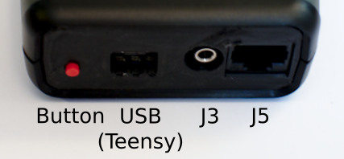
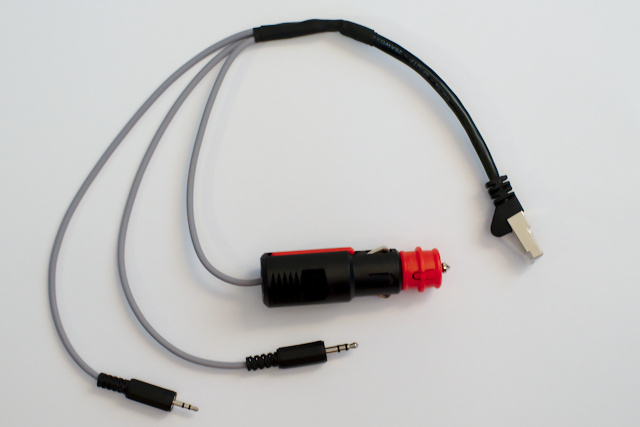
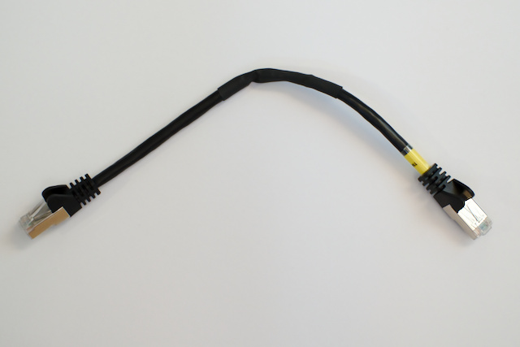

Anschlusskabel
Zum Anschluss des bt-trx an das Funkgerät empfiehlt es sich, aus einem Netzwerkkabel mit RJ45 Stecker ein Adapterkabel zu bauen.
Da die Funkgeräte an der Mikrofonbuchse nicht immer eine passende Versorgungsspannung bzw. -leistung liefern, kann es erforderlich sein, die Spannung extern zuzuführen (z.B. über Zigarettenanzünder).
bt-trx bietet zwei Möglichkeiten um mit Spannung versorgt zu werden:
- Buchse J5: V_IN (Pin 7)/GND (Pin 8), 6...20 V DC, ca. 40 mA bei 12 V, oder
- Micro-USB Buchse (Teensy)

In den folgenden Tabellen werden immer RJ45 Stecker mit T568B Belegung angenommen!
Belegung RJ45 Buchse (J5)
| Pin | Kürzel | Farbe | Signal bt-trx |
|---|---|---|---|
| 1 | o | orange/weiß | CAT_TX |
| 2 | O | orange | AUDIO_IN_B |
| 3 | g | grün/weiß | CAT_RX |
| 4 | B | blau | AUDIO_IN_A |
| 5 | b | blau/weiß | PTT |
| 6 | G | grün | AUDIO_OUT |
| 7 | br | braun/weiß | V_IN (6...20 V DC) |
| 8 | BR | braun | GND |
Belegung Funkgerät
Hier ist eine Sammlung der Steckerbelegungen diverser Funkgeräte und der entsprechenden Signale des bt-trx.
Handfunkgeräte (2.5mm und 3.5 mm Klinke)
z.B. Anytone, Baofeng, Kenwood, Wouxun
| Kontakt | Signal | Farbe Stecker J5 | Signal bt-trx |
|---|---|---|---|
| 3.5 mm Tip | +5V | -- | -- |
| 3.5 mm Ring | MIC+ | G | AUDIO_OUT |
| 3.5 mm Sleeve | MIC-/PTT | b | PTT |
| 2.5 mm Tip | SPK+ | B | AUDIO_IN_A |
| 2.5 mm Ring | Prog | -- | -- |
| 2.5 mm Sleeve | SPK-/PTT | BR | GND |
Die Spannungsversorgung des bt-trx (br (+)/BR (-)) muss extern zugeführt werden oder über USB erfolgen.
Beispiel für ein Adapterkabel mit Klinkenstecker

Kenwood
TM-D700
| Pin | Farbe | TM-D700 | Farbe Stecker J5 | Signal bt-trx |
|---|---|---|---|---|
| 1 | o | DWN | -- | -- |
| 2 | O | -- | -- | -- |
| 3 | g | MIC | G | AUDIO_OUT |
| 4 | B | GND (MIC) | BR | -- |
| 5 | b | STBY (PTT) | b | PTT |
| 6 | G | GND | BR | GND |
| 7 | br | 8 V, max. 200 mA | br | V_IN |
| 8 | BR | UP | -- | -- |
Die Spannungsversorgung des bt-trx erfolgt direkt über das Funkgerät.
Beispiel für ein Adapterkabel für Kenwood TM-D700

TM-D710 (nicht getestet)
| Pin | Farbe | TM-D710 | Farbe Stecker J5 | Signal bt-trx |
|---|---|---|---|---|
| 1 | o | Keypard Serial | -- | -- |
| 2 | O | -- | -- | -- |
| 3 | g | MIC (600 Ohm) | G | AUDIO_OUT |
| 4 | B | GND (MIC) | BR | -- |
| 5 | b | PTT | b | PTT |
| 6 | G | GND | BR | GND |
| 7 | br | 8 V, max. 100 mA | -- | -- |
| 8 | BR | -- | -- | -- |
Die Spannungsversorgung des bt-trx (br (+)/BR (-)) muss extern zugeführt werden oder über USB erfolgen.
TODO: Testen ob 8 V, 100 mA ausreichen um bt-trx direkt über das Funkgerät zu versorgen
ICOM (nicht getestet)
| Pin | Farbe | IC-7000 | Farbe Stecker J5 | Signal bt-trx |
|---|---|---|---|---|
| 1 | o | +8 V, 10 mA max. | -- | -- |
| 2 | O | UP/DWN | -- | -- |
| 3 | g | M8V SW | -- | -- |
| 4 | B | PTT | b | PTT |
| 5 | b | GND (MIC) | BR | GND |
| 6 | G | MIC | G | AUDIO_OUT |
| 7 | br | GND | BR | GND |
| 8 | BR | SQL | -- | -- |
Die Spannungsversorgung des bt-trx (br (+)/BR (-)) muss extern zugeführt werden oder über USB erfolgen.